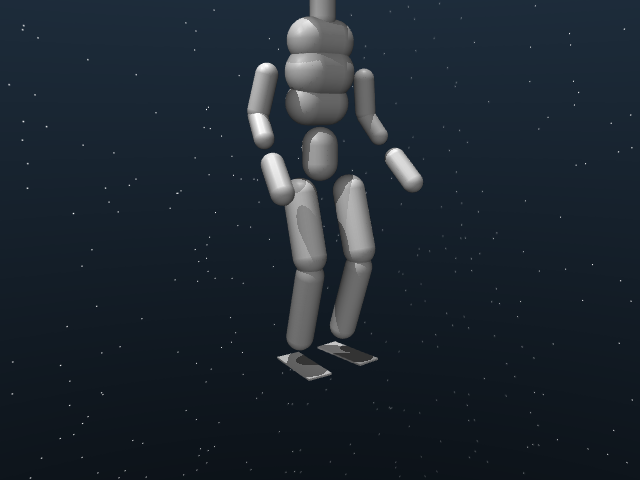
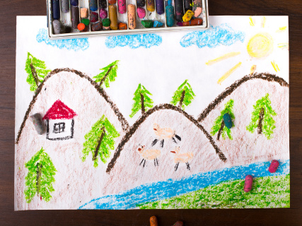
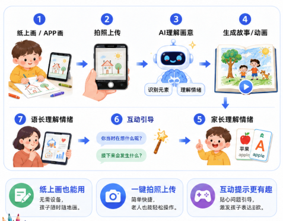

Egocentric
Current research at NUS focuses on Egocentric multimodal human-data capture. The project is at an early stage.
CURRENTLY · NUS ROBOTICS
ROBOTICS · NUS · SINGAPORE
I got into robotics by building a whole robot.Mechanics, embedded control and vision led me to motion-control software, humanoids and human-motion data.
I'm now at NUS, focused on egocentric multimodal data capture. I work on sensor integration, calibration, synchronization and recording. The project is at an early stage.
I love getting a robot moving on real hardware. That's where a timing bug, a poor mapping or an unexpected contact becomes something I can investigate and fix.
NUS master's student · Robotics and Automation
I'm now at NUS, focused on egocentric multimodal data capture. I work on sensor integration, calibration, synchronization and recording. The project is at an early stage.
I love getting a robot moving on real hardware. That's where a timing bug, a poor mapping or an unexpected contact becomes something I can investigate and fix.
NOW · SEP 2026
Current research at NUS focuses on Egocentric multimodal human-data capture. The project is at an early stage.
SELECTED WORK · 2025—2026
The projects where I've spent the most time building, testing and figuring out why a robot didn't do what I expected.
PATH · 2023—NOW
My undergraduate logistics robot got me hooked on building across disciplines. I connected mechanics, embedded control and vision, then moved into field deployment, robot-arm control and hardware experiments. Whole-body VLA and humanoid work followed in 2026. At NUS, those interests now meet in egocentric multimodal data capture.
For my undergraduate thesis, I built the mechanism and connected STM32 control with Raspberry Pi / OpenCV vision, bringing detection, transport, placement and return into one working robot.
I prepared data, trained and optimized YOLOv11, and deployed it to an edge device for aerial Asian-elephant detection. Testing real video streams and joining field validation brought compute limits and changing camera conditions into my model-development work.
At Zhongke Huiling, I built a spline-motion SDK and FR3 teleoperation, alongside six-axis force and compliant-control work. I tested timing, filtering, coordinate transforms and dynamics compensation on hardware.
For Whole-body VLA / WAM, I implemented PICO, SMPL and RGB synchronization, organized HDF5 data and checked motion replay. EgoHumanoid and MimicLite took me further into five-finger models, G1 deployment and A3U adaptation.
At NUS, I focus on egocentric multimodal data capture, working on sensor integration, calibration, synchronization, recording and quality checks. The project is at an early stage.
TECHNICAL STACK
Motion PlanningInverse KinematicsServoCart / ServoJTeleoperationImpedance / AdmittanceForce Feedback
I implement trajectory interpolation, real-time command streaming, input filtering and force feedback, then test continuity and response on hardware.PICOSMPLRGB / Pose SyncHDF5Human PoseRetargetingData Quality
I align sensor streams, prepare human-to-robot motion mappings and use synchronized replay to find dropped frames, pose jumps and data-quality issues.PythonMuJoCoFAIRINO FR3 / FR5G1A3UFrankaSTM32Raspberry Pi
I integrate robot models and device interfaces, check motions in simulation and use hardware response to investigate model, timing and control errors.CONTACT
I'm focused on egocentric multimodal data capture and would love to meet people working on robot control and human demonstrations. Email me to swap ideas about a hardware problem, talk about data capture, or discuss research collaborations and engineering roles.
CURRENT RESEARCH · NUS
At NUS, I focus on Egocentric research into multimodal human-data capture. The project is at an early stage.
My responsibilities cover system integration, experiment support and data quality.
RESPONSIBILITIES
Contribute to device integration for the capture system.
Work on calibration, synchronization and data recording.
Check data quality and document experimental procedures.
01 / RECENT WORK · 2026
Getting human motion to work on different bodies draws me to humanoids. I built EgoHumanoid's data capture, sync and replay, reproduced open-source MimicLite on G1, and adapted A3U's model, data and interfaces for training and hardware tests.
A / HUMAN DATA + REPLAY
I aligned RGB and SMPL through resampling, interpolation and dropped-frame handling, connecting HDF5 / SVO2 records with G1 replay. I replaced the old three-finger hand with a Fourier five-finger model and used synchronized replay to check coordinate frames, joint mappings and pose jumps.
The three views come from one replay chain; changing focus keeps the shared timeline intact.
B / HUMANOID DEPLOYMENT
I first reproduced open-source MimicLite's G1 deployment, including sim2sim, Orin inference and communication. Moving to A3U meant adapting joint order, control interfaces and motion data. The harder work was investigating body differences through collision models, response plots, gain tuning and hardware validation.
Starting from open-source MimicLite, I reproduced G1 deployment, set up Orin inference and tested inline and ZMQ + bridge communication. I checked walk, jump and fight/sports reference motions on hardware to verify the full deployment.
walk1_subject1 · jumps1_subject2 · fightAndSports1_subject1I adapted A3U's model, motion data and control interface. Model views, simulation plots and hardware tests helped me investigate transfer between different robot bodies.

I reproduced the open-source MimicLite deployment on G1: computer-side sim2sim, onboard Orin inference, and inline and ZMQ + bridge communication. I verified each connection with reference motions on hardware, bringing the model, inference environment and robot interface together.
02 / RECENT WORK · 2025—2026
I enjoy getting control ideas working on a real arm: keeping a path moving, following a person smoothly and making contact felt at the other end. I built a spline-motion SDK, FR3 teleoperation and 2-DoF force feedback.
A / SERVO MOTION CONTROL
I independently built this SDK with quintic position interpolation, Rodrigues orientation interpolation, corner blending and ServoCart streaming. IK pre-checks, joint-continuity checks and queue throttling handle path transitions and late targets. It has been used on a PUMA footwear factory robot in Putian.
B / FAIRINO TELEOPERATION
I reused my spline SDK's interpolation methods for FR3 teleoperation at low implementation cost. Sampling runs alongside a 125 Hz control loop. Input updates the pending target; I replan from the current state only when switching conditions are met. I compare raw input, filtering, commands and actual position.
C / FORCE FEEDBACK
I wanted the operator to feel when the follower meets resistance. On a 2-DoF setup, I implemented gravity compensation, joint following and contact torque feedback. I subtract model-estimated gravity from motor torque, then use hysteresis and an asymmetric low-pass filter to return resistance to the leader.
03 / OTHER WORK · AI STORYTELLING
I like exploring what AI can add to everyday life. Drawry turns a child's drawing into a story to read together. On the team, I refined features and interaction logic, and helped design and present the prototype for a family reading experience.
ONE DRAWING · FOUR PRODUCT STATES
I designed around the child and parent: upload a drawing, generate a story and return to it later. I defined key screens, each step's inputs and outputs, and how drawings, stories and shared-reading records fit together in the family space.

Keep the child's original strokes; check orientation and crop.

01 / INPUT
Upload or capture the drawing.
Original drawingMY CONTRIBUTION
Refined features and interaction logic, turning the family reading experience into key screens and actions.
Defined inputs and outputs for image understanding, stories and storyboards, and contributed to the MVP prototype design.
Helped prepare the prototype demonstration and pitch materials, presenting the idea through a complete user flow.